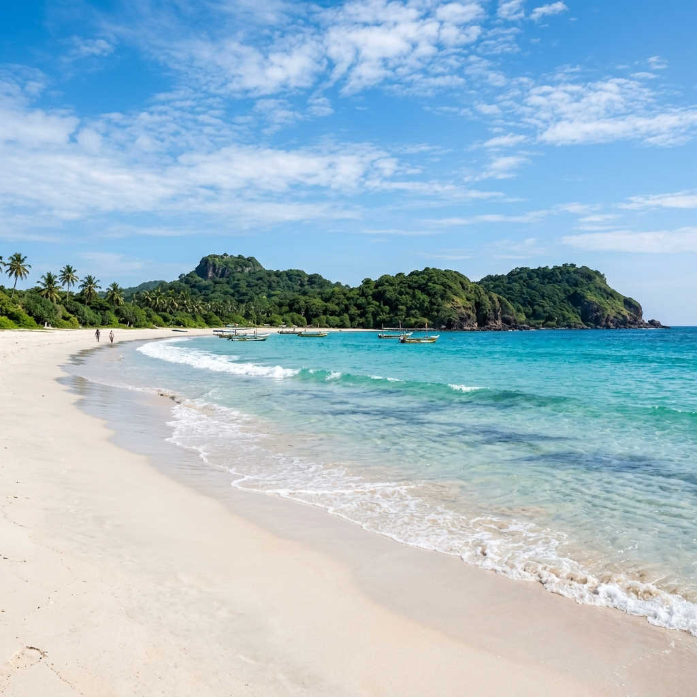

Trace the ancient paths of kings, wander through mist-shrouded mountain sanctuaries, and unwind on tranquil golden sands. The Heritage Loop is our ultimate curated 10-day journey designed to showcase the spiritual depths and coastal beauty of eastern and central Sri Lanka.
Beginning in the sacred relic cities of the Cultural Triangle, you will discover monolithic monuments swallowed by tropical forests, scale ancient cloud palaces, and taste home-style clay pot curries. Transitioning upward into the hill country, the air cools as you enter Kandy, the island's spiritual heartland. Finally, bypass the busy tourist hubs for the pristine, clear-blue tides of Trincomalee on the East Coast, enjoying three days of marine safaris and absolute shorefront relaxation.
Day-by-Day Plan

Day 1-2: Cultural Triangle - Anuradhapura
Arrive in Colombo and transfer directly to the ancient city of Anuradhapura. Spend your second day exploring ruins dating back to the 4th century BC. Stroll through the sacred Mahamevnawa Gardens, pay respects at the ancient Jaya Sri Maha Bodhi tree (the oldest historically documented tree in the world), and marvel at the massive dome structures of Jetavanaramaya and Ruwanwelisaya.

Day 3-5: Fortresses & Ruins - Sigiriya & Polonnaruwa
Drive south into the heart of the Cultural Triangle. Scale the monumental Sigiriya Lion Rock early in the morning to wander through sky gardens and admire 1,500-year-old frescoes. The following day, explore the forested medieval capital of Polonnaruwa by bicycle, viewing the spectacular Gal Vihara rock temples. Conclude day 5 with an afternoon safari in Minneriya National Park to witness 'The Gathering' of wild elephants.

Day 6-7: Sacred Hills - Kandy
Climb into the misty central highlands towards Kandy, the last royal capital of Sri Lanka. Visit the gold-roofed Temple of the Sacred Tooth Relic, join in a traditional evening drumming ceremony, and walk among the towering palm avenues of the Royal Botanical Gardens in Peradeniya. Stroll the banks of Kandy Lake at sunset to soak in the serene atmosphere.

Day 8-10: Pristine Shores - Trincomalee
Depart the mountains for the sun-bleached shores of Trincomalee. Known for having some of the most serene and untouched beaches in the country, this coastal town offers a relaxed sanctuary. Take a morning boat safari to Pigeon Island National Park to snorkel over colorful coral reefs alongside green sea turtles, and explore the historic Koneswaram Temple perched dramatically on Swami Rock cliff edges.
Curated Luxury Stays
We select hotels that reflect the heritage and environment of their location, focusing on architectural elegance and serene environments.